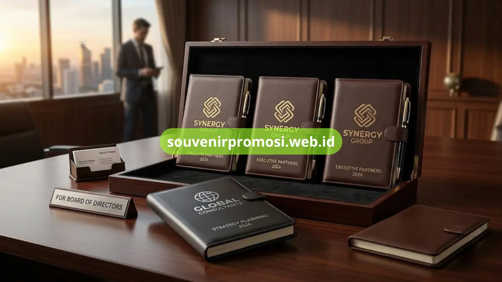

Poin Penting
- Bahan sampul terbagi menjadi kulit sintetis dan kulit asli dengan karakteristik berbeda.
- Ukuran agenda tersedia mulai dari saku, A5, hingga A4 sesuai kebutuhan penggunaan.
- Teknik cetak logo meliputi emboss, deboss, ukir laser, hot print, dan foil.
- Finishing permukaan dapat dipilih doff atau glossy sesuai identitas brand.
- Katalog lengkap spesifikasi dapat dilihat langsung di Souvenir Promosi.
Daftar Isi
Spesifikasi agenda kulit promosi mencakup jenis bahan sampul, ukuran halaman, dan teknik cetak logo yang menentukan tampilan akhir produk. Memahami spesifikasi ini membantu perusahaan menentukan model agenda kulit yang sesuai dengan anggaran dan kesan branding yang diinginkan.
Artikel ini membahas rincian bahan, ukuran, dan teknik cetak yang tersedia di katalog Souvenir Promosi, sehingga tim procurement dapat membuat keputusan yang lebih terarah sebelum mengajukan pemesanan.
Apa Perbedaan Kulit Sintetis dan Kulit Asli pada Agenda Promosi
Kulit sintetis pada agenda promosi umumnya berbahan dasar PU atau PVC yang diberi tekstur menyerupai kulit asli namun dengan harga yang lebih terjangkau untuk pemesanan volume besar. Kulit asli memberikan tekstur alami dan daya tahan lebih lama, sehingga sering dipilih untuk hadiah kepada klien atau jajaran direksi.
Karakteristik Kulit Sintetis
Kulit sintetis lebih ringan, tersedia dalam variasi warna solid yang konsisten antar unit, dan lebih mudah dibersihkan dari noda ringan. Bahan ini menjadi pilihan efisien saat perusahaan memesan agenda promosi dalam jumlah besar untuk seluruh karyawan atau peserta acara.
Karakteristik Kulit Asli
Kulit asli memiliki serat dan tekstur yang khas pada tiap lembarnya, memberi kesan eksklusif pada agenda promosi. Bahan ini umumnya digunakan untuk kuantitas terbatas seperti hadiah eksekutif atau merchandise VIP.

Ukuran Apa Saja yang Tersedia untuk Agenda Kulit Korporat
Ukuran agenda kulit promosi disesuaikan dengan kebutuhan penggunaan sehari-hari maupun kesan formal yang ingin ditampilkan perusahaan.
Ukuran Saku dan Mini
Ukuran saku cocok untuk giveaway acara dengan kebutuhan jumlah besar, mudah dibawa, dan tetap dapat memuat logo dengan jelas pada sampul depan.
Ukuran A5
Ukuran A5 menjadi pilihan seimbang antara portabilitas dan ruang tulis yang cukup luas, sering dipilih untuk kebutuhan pencatatan harian karyawan maupun klien.
Ukuran A4
Ukuran A4 memberi kesan lebih formal dan biasanya dilengkapi kompartemen tambahan seperti slot dokumen, kalkulator, atau slip kartu nama.
Teknik Cetak Logo Apa yang Bisa Diterapkan pada Sampul Kulit
Pemilihan teknik cetak logo memengaruhi tampilan akhir dan daya tahan cetakan pada permukaan kulit.
Emboss dan Deboss
Teknik emboss menghasilkan logo timbul tanpa tambahan warna, memberi kesan elegan dan formal, sementara deboss menghasilkan efek logo tenggelam pada permukaan kulit.
Ukir Laser
Ukir laser memberikan detail presisi tinggi pada garis logo yang rumit, cocok untuk logo dengan tipografi kecil atau elemen grafis detail.
Hot Print dan Foil
Hot print menggunakan lapisan warna solid seperti emas atau silver yang ditekan panas ke permukaan kulit, memberi efek mengkilap yang menonjol pada sampul berwarna gelap.
Data spesifikasi lengkap termasuk pilihan warna, ketebalan bahan, dan estimasi kapasitas cetak logo per ukuran dapat dilihat langsung pada halaman produk di https://souvenirpromosi.web.id/, sehingga tim procurement dapat menyesuaikan pilihan dengan anggaran dan brand guideline perusahaan sebelum mengajukan pemesanan.
Kesimpulan
Menentukan spesifikasi agenda kulit promosi yang tepat dimulai dari memilih jenis bahan, ukuran, dan teknik cetak logo yang sesuai dengan tujuan penggunaan.
Konsultasikan kebutuhan spesifikasi perusahaan Anda dan ajukan permintaan katalog lengkap melalui Souvenir Promosi untuk mendapatkan rekomendasi kombinasi bahan dan teknik cetak yang paling sesuai.